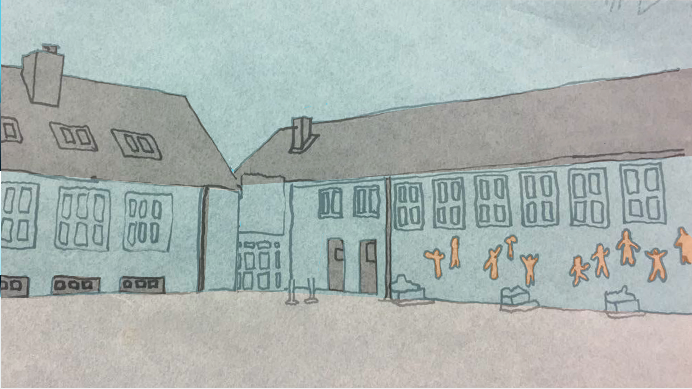
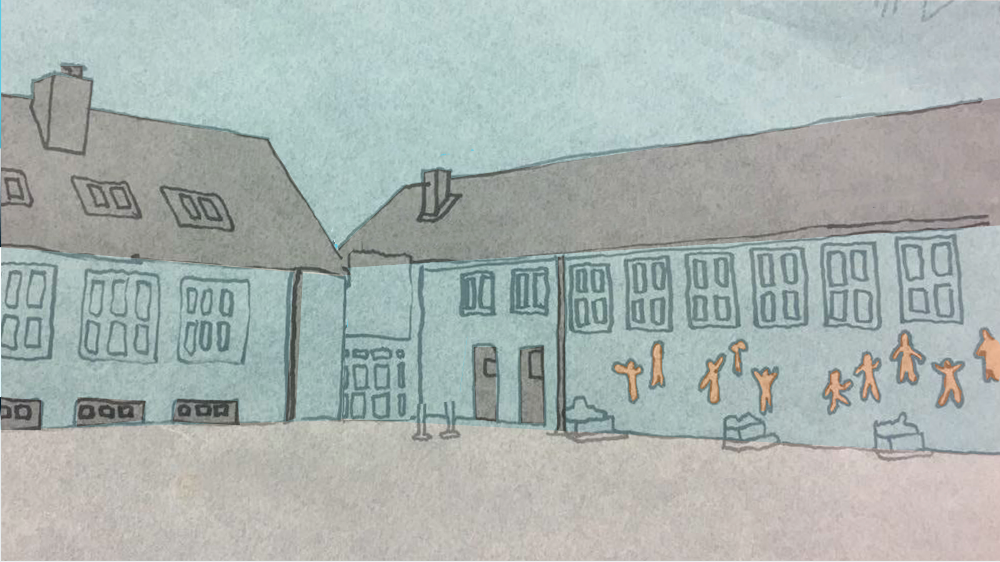

Tema 2 - Animation
Gruppeprojekt for Sex og Samfund
Opgaven
Anden opgave i forløbet ”Grundlæggende animation” lød igen på at lave en interaktiv animation, denne gang for en kunde. Vores kunde var sex og samfund, som ønskede et interaktiv dilemmaspil, der ville skabe opmærksomhed omkring privatsnak.dk. Temaet for det interaktiv dilemmaspil var billededeling på nettet for målgruppen 13-15 årige.
Løsningen
Opgaven skulle løses i grupper, min gruppe bestod af Emil, Hedi og Danial. Efter at brainstorme på en masse forskellige ideer, kom vi frem til at vores interaktive dilemmaspil skulle handle om, at man altid selv har valget om at dele sine private ejendele, lige meget om det gælder dit tyggegummi eller et nøgenbillede.
Under forløbet udarbejde vi en historiestruktur for fortællingen, designe karaktere, opbygge en scene, lave spritesheets, kode keyframes og JavaScript, og opbyggede derved gradvist en samlet fortælling.
Nedenfor ses to rentegninger af karaktererne, samt vores scene for fortællingen.
 
Link til vores færdige animation
Link til vores dokumentations website findes her

Link til vores færdige animation
Link til vores dokumentations website findes her